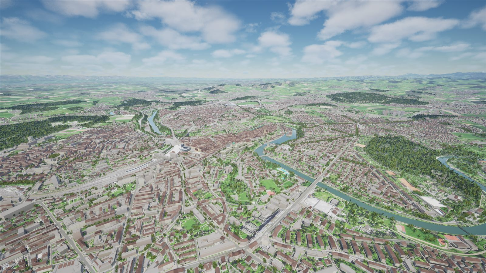
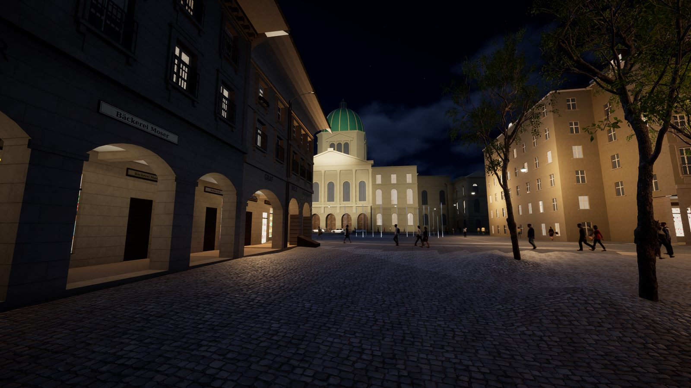

Rotes QuartierDas Spiel
Wer aus Bern kommt, soll die Stadt wiedererkennen, über die Witze lachen und noch eine Runde drehen wollen.
Zur Stosszeit durch den Hauptbahnhof. Unter den Lauben von Spitalgasse und Marktgasse bis zum Zytglogge, der gerade die volle Stunde schlägt. Dann der lange Weg über die Aarebrücken und auf der Autobahn hinaus ins Grauholz, wo sich nachts die Autoszene trifft. Jeden Laden kann man betreten. Einige auch überfallen.
- Es ist Bern.
- Gebaut aus den Gelände- und Gebäudedaten der Landesvermessung, Strasse für Strasse.
- Es sieht echt aus.
- Sandstein mit Fugen, Licht, das um die Ecke kommt, und eine Aare, die in die richtige Richtung fliesst.
- Es spielt sich gut.
- Gehen mit Motion Matching, Fahren zwischen Simulation und Arcade, volle Controller-Unterstützung.
- Es ist lustig.
- Eine kurze, satirische Geschichte, in der alle ihr Fett abbekommen.
Gelbes QuartierDie Stadt
Die ganze Stadt. Jede Strasse.
Die Spielwelt umfasst die Gemeinde Bern und die A1 bis zur Raststätte Grauholz. Köniz, Ostermundigen, der Gurten sowie Eiger, Mönch und Jungfrau stehen am Horizont. In der Aare kann man schwimmen. Sie nimmt einen mit.
51,6 km² Gemeindegebiet. 71'656 Gebäude. 793 Brücken, darunter alle 12 Aareübergänge. 37,9 km Aare. 744 einzeln ausgearbeitete Altstadthäuser. Und ein Tag dauert 48 Minuten.

Was man hier so macht
So ist es geplant. Gebaut ist noch nicht alles.
- Zu Fuss
Unter den Lauben
Dritte Person, auf Wunsch Ego-Perspektive, die Bewegung mit Motion Matching. Im Sommer in die Aare steigen und sich durch die Stadt treiben lassen.
- Am Steuer
Rund 45 Autos
Fahrgefühl zwischen Simulation und Arcade, Blech, das sich verformt, und Tuning in der Garage. Berns Hügel und Kopfsteinpflaster fahren mit.
- Autoszene
Nächte im Grauholz
Treffen, Sprints, Rundkurse, Drag- und Touge-Rennen bei der Autobahnraststätte. Respekt verdienen und mit Razzien rechnen.
- ÖV
Mit Tram, Bus und Bahn
Trams der Linien 3, 6, 7, 8 und 9, der Trolleybus 20, die S-Bahn und die Marzilibahn. Billettkontrolle inbegriffen.
- Geld
Alles in Franken
Läden zum Hineingehen, mit richtigen Öffnungszeiten. Kaufen oder es bleiben lassen. Dazu Spieltische im Casino und ein Hotelzimmer als Unterschlupf.
- Polizei
Fünf Fahndungsstufen
Vom Streifenwagen bis zur Armee, die «einen Einsatz prüft».
- Welt
Hochnebel inklusive
Tag und Nacht, Wetter und Jahreszeiten, Märkte, der Zibelemärit und Matchtage.
- Handy und Radio
Bern auf Sendung
Sechs Parodie-Radiosender und eine Parodie-Lokalnews-App auf dem Handy.
- Sprache
Bärndütsch im Bild
Texte auf Deutsch, Englisch und Bärndütsch. Gesprochen wird Englisch, unüberhörbar mit Berner, Schweizer und albanischem Einschlag.
Grünes QuartierBilder
Bei Tag und bei Nacht
Alle Bilder stammen direkt aus der Engine, aus dem aktuellen Entwicklungsstand. Nichts ist fertig, und es sieht nach jeder Runde anders aus.

«I hätt eifach gärn e ruehigi Wuche.»
Weisses QuartierDie Geschichte
Abgelehnt. Pleite. Zur Hochzeit eingeladen.
Arben Krasniqi ist 27, gelernter Automechaniker aus Bümpliz und ohne Stelle. Sein Einbürgerungsgesuch ist soeben abgelehnt worden, und für die Hochzeit von Cousin Driton, 600 Gäste, fehlen noch CHF 180'000.
Zehn Missionen führen Arben von der Waschanlage bis in die Tresorräume einer Zürcher Privatbank, vorbei an Kommissionen, Autotreffen und Familienessen. Er bleibt ernst. Für das Absurde sorgt Bern. Die Satire zielt auf Situationen und Institutionen, und verschont wird niemand.
Die Geschichte wird noch geschrieben. Alle Figuren sind frei erfunden.
«Mir hei das prüeft. Sehr gründlech.»
«Driton heiratet. Und du?»
«Dä Chare isch nid töifer gleit. D Strass isch höcher.»
Einbürgerungsgesuch
- Name
- Krasniqi, Arben
- Alter
- 27
- Beruf
- Automechaniker
- Wohnort
- Bern-Bümpliz
- Entscheid
- Abgelehnt
- Arben KrasniqiAutomechaniker, Secondo, Held wider Willen
- Babi und NënaSeine Eltern. Haben zu allem eine Meinung.
- Onkel GëzimFührt eine Waschanlage. Hat Geschäftskontakte.
- Ein Zürcher PrivatbankierDiskret. Sehr diskret.
- Frau ZbindenPräsidentin der Einbürgerungskommission
- «Turbo» GerberKönig der Autoszene im Grauholz
- Kommissär LüthiHätte gern eine ruhige Woche
Schwarzes QuartierWerkstatt
Us dr Wärchstatt
Zuerst wird die Stadt gebaut, dann alles, was darin lebt. Im Moment geht es um Ähnlichkeit: Die Altstadt soll aussehen wie die Altstadt.
Eine spielbare Vorschau kommt als Gratis-Download für Windows. Ein Datum gibt es erst, wenn es eines gibt.
Fahrplan: zwölf Etappen
- FundamentM0erledigt
- Bern aus DatenM1erledigt
- Bahnhof bis ZytgloggeM2jetzt
- Belebte StadtM3geplant
- ÖVM4geplant
- SchauplätzeM5geplant
- WirtschaftM6geplant
- Kampf und PolizeiM7geplant
- AutoszeneM8geplant
- GeschichteM9geplant
- Nebenjobs und RadioM10geplant
- FeinschliffM11geplant
Journal
Vaccarini statt Lamborghini
Alle echten Marken sind aus dem Spiel verschwunden. Läden, Autos, Plakate und Haltestellen tragen jetzt erfundene Namen, vom Grossverteiler Migräne bis zur Batzenbank. Dazu neuer Asphalt ohne Risse, ein dunkleres Dach für den Käfigturm, ruhigere Schaufenster und Fallrohre, die bis zum Boden reichen. Die Bilder oben sind neu.
Der Sandstein bekommt Fugen
Die Altstadtfassaden sind jetzt in Quaderlagen gemauert, jedes Haus mit eigener Schichthöhe. Die Erdgeschosse an Spitalgasse und Marktgasse erhalten gebänderte Rustika. Alle 744 Häuser sind damit neu aufgebaut.
Keine Laube wie die andere
Die Altstadthäuser unterscheiden sich jetzt von Parzelle zu Parzelle: andere Breiten, andere Fensterrhythmen, eigene Ladenschilder und nachts beleuchtete Fenster. Auch die Glasfront des Bahnhofs und das Stadtgrün wurden überarbeitet.
Bärndütsch ist eine Sprache
Bärndütsch kommt als vollwertige Textsprache zu Deutsch und Englisch dazu. Von einer Maschine gesprochen wird es nie. Nur von echten Stimmen.
Vom Bahnhof zum Zytglogge, zu Fuss
Der erste spielbare Ausschnitt: von der Bahnhofhalle durch die Lauben bis zum Zytglogge, mit Passanten, Trams, Tag und Nacht.
Bern aus Daten
Die ganze Gemeinde steht, erzeugt aus dem Gelände und den Gebäudemodellen der Landesvermessung sowie aus OpenStreetMap: jede Strasse, jede Brücke, die Aare.
Es geht los
Der erste Commit, ein leeres Unreal-Projekt und eine sehr lange Liste.